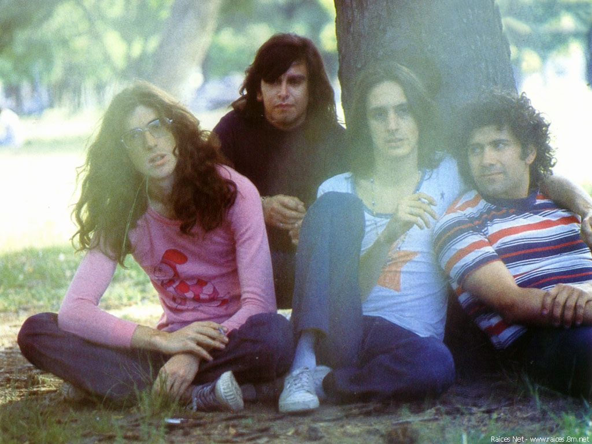
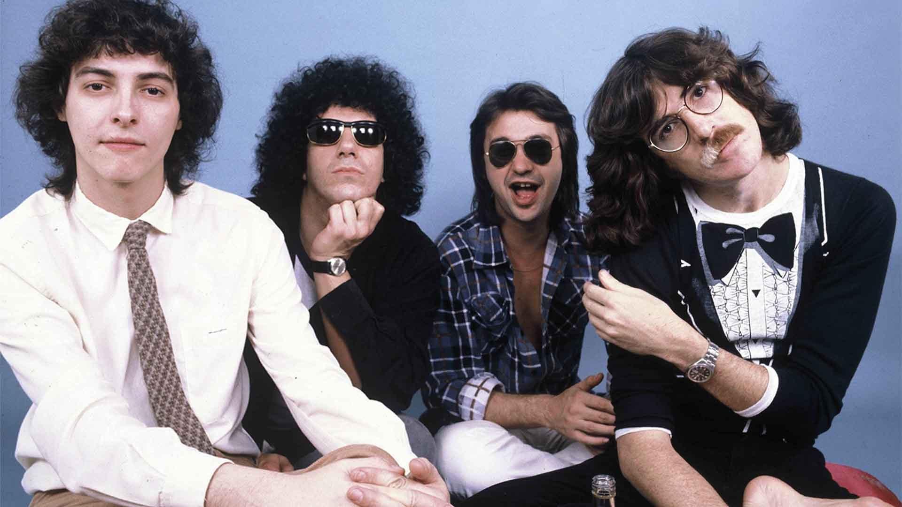
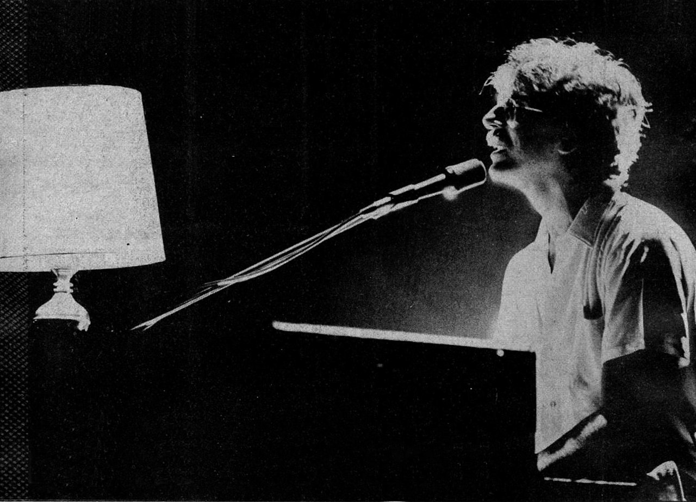
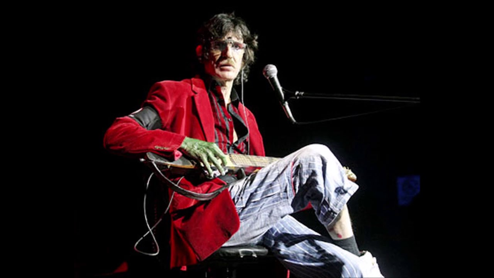

Infancia
Carlos Alberto García nació en la ciudad de Buenos Aires en el barrio de Caballito, el 23 de octubre de 1951, siendo el primogénito de Carmen Moreno y de Carlos Jaime García-Lange, un ingeniero dueño de la primera fábrica de fórmica de la Argentina de clase alta, descendiente de neerlandeses por vía materna. La familia contaba, además, con tres hermanos: Enrique, Daniel y Josi García. Su madre Carmen se dedicaba al cuidado y educación de sus hijos, pero quiso que cada uno tuviera una niñera profesional y para mayor orden y control, dispuso que cada uno durmiera en una habitación separada. La música comenzó desde muy temprano en la vida de García: a los dos años aprendió a tocar una citarina de oído, y luego siguió con un pequeño piano de juguete que le regaló su abuela materna.
Cuando los padres de García emprendieron un viaje a Europa, los niños quedaron bajo la tutela de las niñeras y de una abuela. El estrés por la ausencia de sus padres le provocó a Charly una crisis nerviosa, trastorno que le provocó su característico vitiligo. Cuando sus padres regresaron del viaje a Europa, su madre notó que Charly había aprendido a tocar de oído «Torna a Sorrento», una melodía la cual venía en una caja musical
No sería hasta cinco décadas después cuando junto a Palito Ortega Charly grabaría la canción para el álbum Kill gil.
La situación económica de la familia entró en crisis para 1959: el padre de García tuvo que cerrar su fábrica de muebles de fórmica lo que derivó en la posterior pérdida de la mayor parte de las propiedades familiares. Su padre comenzó a trabajar entonces como profesor de física y matemáticas, y su madre empezó a trabajar como productora de un exitoso programa de radio titulado Folklorísimo, en el que solían presentarse a las máximas estrellas del folclore argentino —corriente en auge en ese tiempo—. Carmen Moreno solía comentar a todos acerca de las virtudes como pianista de su hijo. Fue así como artistas de la talla de Ariel Ramírez, Eduardo Falú y Mercedes Sosa lo escucharon tocar, quedándose impresionados. En 1964 se recibió de profesor de piano, teoría y solfeo con un alto promedio en el conservatorio Thibaud Piazzini. Su apodo Charly provino de ese entonces gracias a una profesora de inglés, aunque originalmente fue Charlie.
Inicios como músico
Una noche, Mercedes Sosa fue a cenar a casa de los García Moreno. Al escuchar tocar el piano a Carlitos, le comentó a Ariel Ramírez: «Este chico es como Chopin». Orgullosa, su madre Carmen Moreno no dejó de decir que su hijo era un verdadero genio a cuanta persona se le acercara. Charly amaba la música clásica y odiaba lo popular, al igual que sus padres. Apenas dormía ―sentía que el hacerlo era una pérdida de tiempo― y se pasaba días enteros interpretando a Chopin y a Mozart.
Años después, The Beatles constituyeron un cambio radical para su vida; su música le abrió su espectro musical para siempre. Con ellos, llegaron también los Rolling Stones, Bob Dylan, The Byrds y The Who, entre otros. Allí acabó su carrera de músico clásico. Pidió a gritos que le compraran una guitarra eléctrica, se dejó el pelo largo y comenzaron las peleas con su padre, quien esperaba que se convirtiera en concertista o en ingeniero. Esta relación nunca más lograría componerse; aunque ya no tenían problemas económicos, empezó a insistirle en que saliera a conseguir algún trabajo para financiar sus «vicios».
Sui Generis
Charly asistió al Instituto Social Militar Dr. Dámaso Centeno, un colegio del barrio Caballito. Desde los primeros años solía escapar de las clases para ir a tocar el piano al salón de actos. Allí formó su banda To Walk Spanish junto a Juan Carlos Bellia, en la que hacían versiones de Jimi Hendrix, The Byrds y Rolling Stones, entre otros. Luego, en la escuela secundaria, conoció a Nito Mestre que también tenía una banda junto a Carlos Piégari llamada The Century Indignation. Allí se unieron Nito Mestre y Charly y formaron Sui Géneris.
Cuando estaban por empezar sus presentaciones, a García le llegó la llamada del servicio militar obligatorio. Al segundo mes, García insultó a un oficial; como castigo decidieron enviarlo al sur argentino, pero gracias a las influencias de su madre, terminó en Campo de Mayo. Tiempo después, García debió ser internado en el Hospital Militar por un soplo en el corazón provocado por un tubo de anfetaminas de su madre. En esa noche en que García pensaba que iba a morir, compuso «Canción para mi muerte», el primer éxito de Sui Géneris.
En su desesperación por salir, aprovechó el pedido de una enfermera de trasladar en camilla a un muerto hasta la morgue, pero en lugar de llevarlo ahí, lo arrastró hasta el casino de oficiales, lo sentó en una mesa y se ubicó junto a él. Para completar la escena, pidió una bebida cola para cada uno. Ese motivo fue suficiente para solicitar una investigación psiquiátrica que lo determinó bipolar con personalidad esquizoide y fue dado de baja. El diagnóstico es considerado polémico, ya que el aplanamiento afectivo característico de los esquizoides nunca estuvo presente en Charly García.
Con el retorno de García, el grupo comenzó con sus actuaciones, ya como dúo junto a Nito Mestre, porque los demás se habían ido. García componía todas las canciones (música y letra) y hacía los arreglos. Los arreglos de voces los hacían en conjunto con Mestre. Bajo las influencias de Elton John y Bob Dylan, Charly García y Nito Mestre se juntaron en Sui Géneris sin saber que cambiarían la historia del rock argentino.
Con Vedia en guitarra, Alejandro Correa en bajo, el baterista Beto Rodríguez y Carlos Piégari en los coros, se estrenaron como teloneros del grupo Huinca, comandado por Litto Nebbia. Después, salieron de gira como soportes de Pedro y Pablo; y León Gieco los invitó a participar en un concierto en el Teatro de Luz y Fuerza. Se conocieron, la admiración fue mutua y a partir de allí Gieco y García se convirtieron en «amigos del alma». De a poco García se fue metiendo en el medio y consiguió trabajo como tecladista en la banda Billy Bond y La Pesada del Rock and Roll y junto al debutante Raúl Porchetto.
Una noche, a la salida de un recital, se le acercó una chica y le dio su teléfono. Más tarde la llamó: su nombre era María Rosa Yorio, quien por entonces estudiaba teatro. Empezaron a salir clandestinamente porque el músico tenía su novia oficial llamada Maggie. Pero un día María Rosa se cansó y le dijo que eligiera entre ella o Maggie. La eligió a ella. Como las relaciones de estos jóvenes no eran del todo buenas con sus familias, pronto se mudaron a una pensión en Aráoz y Soler, y más tarde a otra un poco mejor en el barrio de San Telmo. Ninguno de los dos tenía una buena entrada económica así que fueron tiempos difíciles, aunque poco les importaba. Finalmente ellos llegaron a tener un hijo: Miguel Ángel García.
Después de incursionar por todas las compañías grabadoras, los Sui Géneris encontraron apoyo en el productor Pierre Bayona y pudieron sacar en el mes de noviembre su primer disco, Vida. Se transformó en un inesperado y verdadero éxito ―sobre todo entre los adolescentes―, pero a la vez muchos roqueros salieron a criticar por «blandos» a estos dos adolescentes de aspecto desgarbado. A García, el mote de «famoso» le molestaba. Hacía lo imposible por no asistir a lugares donde hubiera mucha gente aunque todavía no se había convertido en el ídolo que sería después. Era muy tímido y solo disfrutaba de los momentos que pasaba encerrado con su mujer y amigos.
El grupo se consolidó en octubre de 1973 al editar el segundo trabajo discográfico: Confesiones de invierno. Y fue mucho más que un simple grupo de rock.
La situación política en el país se tomaba cada vez más difícil. La Triple A combatía con violencia cualquier cosa que no le gustara. No era un buen momento para atacar a las instituciones. Y justo eso era lo que se le había ocurrido hacer a García. Pequeñas anécdotas sobre las instituciones reunía un par de temas que no iban a superar la censura: las canciones «Botas locas» y «Juan Represión» debieron ser suplantadas por otras, y otros temas debieron modificar sus letras antes de entrar el estudio de grabación. Pero en un recital que ofrecieron en Montevideo decidieron darse el gusto de cantarlos. La situación por la que pasaba Uruguay era similar a la de este país y la policía los arrestó casi sobre el escenario. Fueron llamados a declarar. El primero en hablar fue García y sobre la marcha cambió las letras de las canciones. El resto de la banda aseguró que no las sabía, ya que ellos eran simples músicos, y todos pudieron salir pronto en libertad.
El disco fue muy elogiado aunque no vendió como se esperaba. Esto deprimió mucho a García, y decidió separarse del grupo. Al enterarse, los productores pusieron el grito en el cielo. Para calmar los ánimos, García les propuso hacer un recital de despedida. Y nada menos que en el Luna Park. Nadie creía en la disolución del grupo. A los carteles que publicitaban el megarrecital por toda la ciudad se sumaron los grafiti de los fanáticos de la banda. Adiós Sui Géneris fue un espectáculo que reunió a más de veinticinco mil personas y plantó un precedente histórico en el rock nacional. A la salida, García se fue a cenar con María Rosa a un restaurante de la avenida Corrientes. Allí estaba León Gieco con su mujer, que habían presenciado el recital. La decisión estaba tomada.
PorSuiGieco
En 1974, los líderes del rock acústico se reúnen para salir de gira. Sin un proyecto formal más que «compartir buenos momentos, divertirnos tocando y cantando», Charly García, Raúl Porchetto, Nito Mestre, León Gieco y María Rosa Yorio (por entonces la mujer de Charly) formaron PorSuiGieco y su Banda de Avestruces Domadas que, recién en 1976 y tras varias postergaciones y problemas, grabaron un disco con el nombre del grupo (PorSuiGieco). El disco padeció de la presión de la censura ejercida por el gobierno democrático de Isabel Perón, y debió ser editado sin el tema «El fantasma de Canterville» (aunque muchas copias lo incluían pero no estaba anunciado en el sobre interno). Años más tarde, en 2002, una reedición del disco en formato CD, pondría las cosas en su lugar. El folk acústico de la propuesta original derivó en un estilo más eléctrico y elaborado, aunque sin perder la frescura que caracterizó a la agrupación.
La Máquina de Hacer Pájaros
Sui Géneris estaba agotado. Charly comenzó a incursionar por otros caminos de la música. A la vez, empezó a ir al psicoanalista porque se seguía sintiendo muy angustiado. Se pasaba todo el día encerrado en su departamento, tocando y componiendo, prácticamente sin hablar con nadie. Después de grabar el álbum PorSuiGieco, el siguiente proyecto de García fue La Máquina de Hacer Pájaros (nombre que tomó de una historieta del dibujante Crist), con Carlos Cutaia (teclados), Gustavo Bazterrica (guitarra y coros), José Luis Fernández (bajo y coros) y Oscar Moro (batería y percusión).
La Máquina fue el intento más complejo y profundo de rock sinfónico en la Argentina, y en él, García introdujo la novedad de dos tecladistas simultáneos. Esta banda fue una de las bandas argentinas más trabajadas en cuanto a su sonido, el grupo no fue bien recibido por la crítica y el público, pero su sonido se adelantó varios años en el tiempo.
Debutaron en Cosquín, donde estrenaron algunos temas que luego compondrían el disco que llevó el mismo nombre de la banda, durante varios meses, de jueves a domingo, se presentaban en La Bola Loca, el boliche de Atilio Stampone que alberga cada noche a más de doscientas personas para poder verlos tocar en vivo.
El Golpe Militar asustó a todos, Charly García sentía miedo y salía a la calle lo menos posible, creía que en cualquier momento su nombre integraría las listas negras, no solo temía por su vida, sino también porque pronto iba a convertirse en papá. En marzo de 1977 María Rosa dio a luz a Miguel Ángel García. A pesar de la llegada del bebé, las cosas en el matrimonio no andaban nada bien. Charly García estaba muy embalado en sus proyectos, solo prestaba atención a su música y ella se sentía sola. A los pocos meses decidieron separarse. No pasó mucho tiempo para que María Rosa encontrara una nueva compañía, nada menos que en el mejor amigo de su exesposo, Nito Mestre. Durante ese invierno, La Máquina se reunió en un sótano que cada vez que llovía se inundaba, para dar forma a un segundo disco: Películas. En su momento tenían un extraño récord, su primer disco había sido el más caro de la historia en Argentina, porque había costado más del doble que la producción de un disco común. En el Festival del Amor fue la última presentación de La Máquina, en un colmado Luna Park, el 11 de noviembre de 1977, donde compartieron el escenario con Nito Mestre, León Gieco, Raúl Porchetto, Gustavo Santaolalla, los hermanos Makaroff, entre otros. A García le costaba acostumbrarse a esa nueva vida de padre, alejado de María Rosa. En ese momento difícil conoció a Marisa Zoca Pederneiras, una bailarina brasileña del ballet de Oscar Araiz. Zoca sería su mujer hasta fines de los años ochenta y la inspiradora de varias de sus canciones, como «Zocacola» y «Ella adivinó».

Serú Girán
Tras las peleas en La Máquina, Charly García tomó la determinación de dejar la banda en 1977 y viajar a Brasil con David Lebón, su amigo desde la época de Sui Géneris. Con el dinero recaudado en el Festival del Amor (Luna Park, 11 de noviembre de 1977) alquilaron una casa por tres meses en Búzios, al norte de Río de Janeiro. La elección del lugar se debió a la necesidad de García de estar cerca de su novia Zoca Pederneira y, de paso, para escapar a la noche represiva de la dictadura militar que gobernaba la Argentina. En San Pablo, Charly conoció a los padres de Zoca. Los Pederneira eran una familia de artistas, y se quedaron fascinados con Charly. Artísticamente hablando, García fue influenciado por ciertos artistas brasileños, sobre todo Milton Nascimento.
A pesar de los éxitos comerciales de Sui Géneris, Charly era indigente. En 1978 vivió con Zoca en Brasil una vida centrada en la naturaleza, la pesca y la recolección de frutas. Charly estaba ahora decidido a formar una nueva banda, pero él todavía estaba en la ruina. Haciendo su camino de retorno a Buenos Aires, comenzó una nueva búsqueda de compañeros para banda. Charly necesitaba un bajista y un baterista, y se encuentran en un concierto de Pastoral. Allí se contrató a un bajista talentoso de 19 años de edad, Pedro Aznar, además de su antiguo compañero de La Máquina, el baterista Oscar Moro. La banda estaba integrada por Charly García (voz, teclados), David Lebón (voz, guitarras), Pedro Aznar (bajo, voz), y Oscar Moro (batería). Charly y David eran los compositores principales.
Charly García ahora tenía una banda completa, pero todavía le faltaba dinero. En 1978, Billy Bond se reencontró en San Pablo con García y Lebón, que le estaban dando forma a Serú Girán. Billy les produjo el disco de ese nombre, haciéndoles firmar un contrato leonino. No satisfecho con esto, Bond tomó algunas pistas grabadas por la banda y descartadas para Serú Girán, agregó encima su voz y las usó para Billy Bond and the Jets, un disco editado en 1979 que pasó desapercibido en aquella época. En este álbum se encuentran las canciones «Loco (no te sobra una moneda)», el irónico tema disco «Discoshock» (ambas de García) y una nueva versión funky de «Treinta y dos macetas», del célebre primer trabajo solista de David Lebón, aquí renombrada «Toda la gente». Luego dicha formación se desarmó y queda conformada Serú Girán, con melodías virtuosas y letras que entre la ironía y la angustia retrataron la situación bajo la dictadura argentina. La popularidad de este grupo también se vio reflejada en las ―ahora tradicionales― encuestas de la revista Pelo. Serú Girán ganó las categorías de mejor guitarrista, mejor tecladista, mejor bajista, mejor baterista, mejor compositor (García) y mejor grupo en vivo en los años 1978, 1979, 1980 y 1981. A esto se le agrega grupo revelación 1978; mejor cantante (Lebón) 1980 y 1981; mejor tema 1978 (Seminare) y 1981 (Peperina) y mejor álbum 1978 (Serú Giran).
Aunque la banda regresó a Buenos Aires con grandes expectativas para el nuevo proyecto de Charly García, los comienzos fueron difíciles, era 1978 y el primer disco no convencía a un público escéptico. El primer concierto de la banda fue mal recibido, ya que el público se esperaba una nueva encarnación de Sui Generis. Al día siguiente, el OP especializado de prensa denomina a Serú Girán como la peor banda en Argentina y acusó a David Lebón de que su voz en sus canciones sonaba homosexual, la relación de la banda con algunos medios de comunicación no fue cordial. Un número de la popular revista argentina llamada Gente publicó un artículo despectivo titulado «Charly García: ¿ídolo o qué?». A pesar de la fría recepción, los miembros de Serú Girán estaban convencidos de que tenían un buen proyecto y persistieron.
Serú Girán continuó durante el año 1979 y evolucionó notablemente. Su nuevo disco fue titulado La grasa de las capitales y su portada era una parodia de la revista Gente. El público le dio al álbum una recepción entusiasta. Las presentaciones de la banda fueron resultando cada vez mejores, y finalmente se llevaron a cabo en lugares más grandes.
Las expectativas eran altas en 1980 para el nuevo disco de larga duración, que se llamaría Bicicleta, un nombre que Charly había favorecido para la banda, pero que fue rechazado por los demás miembros. La banda sonaba más madura en este disco. «Canción de Alicia en el país» estableció una analogía extraña entre la historia de Lewis Carroll y el gobierno militar argentino.
Patricia Perea, una estudiante de 18 años que trabajaba como corresponsal de la revista El Expreso Imaginario, cubrió un concierto de Serú Girán y los criticó fuertemente después de que ellos tocaran en Córdoba, alegando que sus actuaciones en el interior eran inferiores a los que ofrecían en la Capital Federal. Serú Girán se vengó de Perea a través de su cuarto LP: Peperina, que era su apodo, con una canción sobre ella, que también fue llamada «Peperina». La historia fue posteriormente ficcionalizada en una película homónima protagonizada por Andrea del Boca. El álbum llevaba un mensaje político. La canción «José Mercado» era una clara referencia a José Martínez de Hoz, ministro de economía.
En enero de 1981 Aznar fue convocado por el guitarrista estadounidense Pat Metheny para incorporarse a su banda. Acordaron encontrarse en Estados Unidos, ya que Pedro viajaría al año siguiente para estudiar en el Berklee College of Music. Este hecho marcaría el final de la banda. El 5 y 6 de marzo de 1982 se hicieron dos recitales para despedir a Pedro Aznar, sin saber que sería la despedida de Serú Girán hasta diez años después. Los emotivos recitales fueron grabados y el resultado fue el quinto disco de la banda No llores por mí, Argentina. Ese año, García inició su carrera solista.
En 2019, en un vídeo filmado junto con Pedro Aznar y David Lebón, los miembros vivos de Serú anunciaron la remasterización del disco La Grasa de las Capitales.
Carrera como solista
Trilogía consagratoria
En 1982, la Argentina estaba en proceso de cambio político. Después de la Guerra de las Malvinas en junio, estalló el caos social y el gobierno militar perdió parte de su poder. Ese año García debutó como solista, hizo la banda sonora de Pubis angelical, película de Raúl de la Torre, adaptada de la novela de Manuel Puig, también guionista. El material salió ese año editado en un álbum doble junto a Yendo de la cama al living. Ayudado por la difusión que se le daba en ese momento al rock nacional a través de los medios de comunicación (durante la Guerra de Malvinas estaba prohibido pasar música en inglés), el disco tuvo una gran recepción en el público. En él venían canciones antológicas, como por ejemplo «No bombardeen Buenos Aires» (que reflejaba el momento de la guerra de Malvinas), «Inconsciente colectivo», «Yo no quiero volverme tan loco» o «Yendo de la cama al living». Para este trabajo, la banda estaba formada por Willy Iturri en batería, Gustavo Bazterrica en guitarra, Cachorro López en bajo y Andrés Calamaro en teclados (estos tres últimos integrantes de Los Abuelos de la Nada). Este material fue presentado en un imponente recital (ante 25.000 personas) en el estadio de Ferrocarril Oeste, el 26 de diciembre de 1982. En esos meses, además de grabar su primer disco solista, Charly produjo artísticamente a Los Abuelos de la Nada, que «telonearon» el recital de Ferro junto con el incipiente Suéter, este último muy mal recibido, con insultos y objetos arrojados al escenario.
En 1983, Charly García dejó Buenos Aires con una maleta pequeña. Al regresar a Buenos Aires desde Nueva York, trajo una nueva calidad. Ese año apareció Clics modernos, grabado y mezclado en Nueva York. Este nuevo trabajo presenta un giro en la música de García, con la introducción de ritmos bailables, canciones más cortas y por momentos más irreverentes, acordes a los aires de renovación que empezaron a llegar con la apertura democrática. Canciones como «Los dinosaurios», «Nos siguen pegando abajo (Pecado mortal)» y «No me dejan salir» se convirtieron en éxitos en la carrera de Charly. Este material fue presentado los días 15, 16, 17 y 18 de diciembre en el estadio Luna Park, acompañado por Pablo Guyot (guitarra), Alfredo Toth (bajo), Willy Iturri (batería), Daniel Melingo (saxo), Fabiana Cantilo (coros) y un joven rosarino en los teclados: Fito Páez. Este disco no fue bien entendido por el público, pues incluía (por primera vez en Argentina) temas «bailables», es decir: el ritmo tomaba otra dimensión, recortando las letras, hasta entonces concepto primordial del rock nacional. Tuvo un reconocimiento más tardío.
El 10 de diciembre, el curso de la historia argentina dio un giro cuando el gobierno pudo ser elegido democráticamente por el pueblo. En 1984, Charly García realizó muchos espectáculos bien recibidos, y grabó otro álbum durante los últimos meses. La trilogía esencial de García se completa con Piano bar, un álbum roquero que tiene en «Demoliendo hoteles» y en «Cerca de la revolución» sus máximos logros. También lanzó Terapia intensiva, un maxi-simple compuesto, producido y arreglado por García para la obra de teatro homónima de Antonio Gasalla.
Tango y Parte de la religión
Luego de 1984 no grabó ningún disco (fue editada una recopilación, Grandes éxitos). Quedó incompleto un proyecto con Luis Alberto Spinetta (Spinetta/García), del cual sobrevivieron algunos recitales y el tema «Rezo por vos» (incluido en dicho disco). Ese mismo año fue protagonista del Festival Rock and Pop, organizado por el empresario Daniel Grinbank, donde compartió el escenario con Nina Hagen, INXS y Los Abuelos de la Nada, entre otros, que se llevó a cabo a principios de noviembre en el estadio de Vélez.
Tras el éxito de Piano bar, que era la consagración de García como solista, 1985 fue un año para reducir la velocidad. Charly volvió a reunirse con Pedro Aznar en Nueva York y junto a él grabó Tango (1986). Su difusión fue muy escasa, pese a que dio la impresión de que el proyecto daba para más. El proyecto Tango terminó cuando se sucedieron incidentes en una presentación en San Miguel de Tucumán, que provocaron la cancelación de dos shows que Tango tenía programados en Obras en mayo de 1986. Paralelamente, renovó su banda, entonces integrada por Richard Coleman (guitarra), Christian Basso (bajo), Fernando Samalea (batería), la vuelta de Andrés Calamaro y Melingo. Con ellos giro por Chile, Brasil y España. Esta agrupación se denominaba Las Ligas. En ese período, comenzaría a producir a varias bandas y artistas, como Andrés Calamaro, Suéter y Los Abuelos de la Nada.
En 1987 llegó Parte de la religión, considerado por muchos como el mejor disco de García solista. Este material, junto a Piano bar, terminarían por confirmarlo como uno de los mejores compositores de rock argentino y un artista reconocido a nivel internacional. El álbum fue grabado e interpretado casi en su totalidad por él, y alterna un rock fuerte con estribillos melódicos. Es, seguramente, uno de sus discos más prolijos y compactos, desde la tapa hasta el contenido de las letras. Ya para las presentaciones en vivo, en julio, la banda que lo acompañaba era nueva: Carlos García López en guitarra, Fernando Lupano en bajo, Fernando Samalea en batería, Fabián Quintiero y Alfi Martins en teclados y nuevamente Fabiana Cantilo en los coros.
A García le ofrecieron un papel de reparto (en la cual interpretó a un enfermero) en una película del que también compondría la banda sonora. Lo que vendrá, intento de novela futurista de Gustavo Mosquera, contó con la participación de Hugo Soto y Juan Leyrado. Curiosamente, García ganaría un premio en Nueva York como mejor actor de reparto. En toda la película Charly García conducía un vehículo, algo que jamás pudo hacer en la vida real. Tras componer la banda de sonido de la película, trabajó en su siguiente álbum solista, Cómo conseguir chicas (1989), esencialmente un trabajo de recopilación de canciones sueltas, que García, por diversos motivos, nunca había grabado. Contó con invitados como el brasilero Herbert Vianna (de Os Paralamas do Sucesso) y el violinista indio L. Shankar. El LP incluye una canción titulada «Shisyastawuman» (una transliteración directa deliberadamente de she is just a woman: ‘ella es solo una mujer’), la primera canción grabada por García en inglés que fue escrita para una mujer. La mujer lo abandonó después de escuchar la canción, al igual que Lebón le había advertido años atrás. Una canción llamada «Zocacola» que Charly había dedicado a Zoca también se incluyó en este LP. Un par de meses después de que el disco fue lanzado, Zoca lo dejó.
García había cambiado. Físicamente, parecía más viejo. Su música era oscura, y el García de antes había desaparecido. Ahora su sonido estaba más cerca del punk rock, con temas violentos, como «No toquen», o un estilo depresivo y oscuro, como se muestra en «No me verás en el subte». Diferentes tiempos y adversos que se avecinaba.

Los dias de exceso
En 1990, Charly tenía muchas ideas, pero la banda no. Otro miembro importante de la banda, Fabián Zorrito Von Quintiero, se había ido a unirse a otra banda, Los Ratones Paranoicos. Hilda Lizarazu (exvocalista de Suéter que había ingresado a la banda para la gira internacional en 1989/1990) y Carlos García López comenzaron un grupo llamado Man Ray. Charly ahora estaba solo. Para su nuevo disco, Filosofía barata y zapatos de goma, llamó a muchos de sus viejos amigos, quienes ayudaron a grabar la mayoría de las canciones. Ayudaron, entre otros, Andrés Calamaro, Rinaldo Rafanelli, Fabiana Cantilo, Nito Mestre, Pedro Aznar, Fabián von Quintiero e incluso Hilda Lizarazu. Para poder lanzar el disco, García debió enfrentar un juicio por «ofensa a los símbolos patrios» ya que ese LP incluía una versión del Himno nacional argentino, que terminó siendo autorizada por los tribunales. A mucha gente le gustó, viéndola como una versión fresca, sincera, respetuosa y fuerte de la vieja canción.
En 1991 lanzó Radio Pinti, un disco compuesto por Charly García y Pedro Aznar junto a Enrique Pinti, quien se encargó de los raps y la locución. Contó con la participación de los Illya Kuryaki and the Valderramas.
La idea era grabar un álbum con Gustavo Cerati (de la banda Soda Stereo), que se llamaría Tango 3. El puntapié inicial fue «No te mueras en mi casa» (incluido en Filosofía barata y zapatos de goma) y continuó con «Vampiro» (de Tango 4). Sin embargo, por causas que se desconocen, el proyecto quedó en la nada.
En 1993 Charly García fue contratado para componer la banda de sonido de la película Funes, un gran amor. En este álbum se encuentran canciones como «Fifteen forever» y el tango «Naranjo en flor» (cantado por Jairo).
En julio de 1994 se lanza su muy publicitada ópera-rock La hija de la lágrima. Como tal, este trabajo incluye muchos pasajes instrumentales y de virtuosismo. «La sal no sala» (junto a Juanse) y «Fax U» son los éxitos que sobresalen. Ese mismo año, Kurt Cobain, líder de Nirvana, trágicamente acabó con su propia vida. Siendo un fan de él, García se tiñó el pelo de rubio.
También durante 1994, la Copa Mundial de Fútbol se jugaba en los Estados Unidos. El legendario jugador de fútbol Diego Armando Maradona estuvo involucrado en una disputa con la FIFA con respecto a una prueba de drogas para la efedrina dopaje, que fracasó, que le impide jugar. Después de que Diego fue enviado a casa, Argentina perdió dos partidos importantes y fue eliminado de la Copa del Mundo. Cuando el último partido estaba a punto de terminar, Charly llamo a Diego por su teléfono celular y le cantó en vivo el «Maradona blues», una canción que compuso para él. Diego lloró cuando escuchó. En septiembre, García presentó el álbum en diez funciones colmadas del Gran Rex. En noviembre del mismo año, Charly fue internado por la fuerza en una clínica psiquiátrica. Estaba muy alterado, pero su estado de ánimo no varió al abandonar el establecimiento. Cuando fue dado de alta estuvo una semana en Buenos Aires y después partió de vacaciones a Río de Janeiro. La consigna era mejorarse. Quedó encantado con un paseo en ala delta, con el que sobrevoló los morros.
La era Say no More
En 1996 editó Say no More, álbum que reúne temas del autor con obras instrumentales que habían sido escritas para la película Geisha, pero no fueron incluidas en la banda sonora por diferencias con el director. Este trabajo marcó un concepto nuevo para García, con el que atraería a un nuevo tipo de público pero terminaría de alejar a varios de sus seguidores más veteranos. Con los años se volvió un disco de culto, e incluso García lo considera su álbum preferido de los que ha grabado.
En 1997 graba junto a Mercedes Sosa un disco de canciones propias interpretadas por la Negra, titulado Alta fidelidad. Ambos se conocían desde su infancia, por lo que decidieron publicar un trabajo colaborativo en el que Mercedes iba a cantar sus canciones favoritas de García.
En 1998 presentó el disco El aguante en Buenos Aires. El álbum cuenta con «Kill my mother», canción dedicada a la madre de Charly, Carmen Moreno. Esta producción contó con muchas versiones traducidas al español por García, como «Tin soldier» (de Small Faces), o «Roll Over Beethoven» (de Chuck Berry). Una canción significativa que no se incluyó fue «A whiter shade of pale», originalmente publicada por Procol Harum, banda que Charly siempre había admirado.
Reunión de Sui Géneris y la Maravillización
En 2000, Charly y Nito Mestre deciden reunir Sui Géneris. Para esta ocasión especial, ambos componen nuevas canciones para un nuevo disco, Sinfonías para adolescentes. Por supuesto, las cosas eran muy diferentes a los 25 años, pero los aficionados jóvenes y mayores estaban entusiasmados con la idea del retorno de Sui Géneris. Esta nueva etapa estará marcada por el nuevo «concepto de sonido» de Maravillización o «hacer algo maravilloso» de García, reemplazando al viejo y oscuro estilo «Say no More». Pese a esto, el concepto «Say no More» y su logo seguirían presentes en la música de Charly hasta Kill Gil, de 2010.
Después de esta interrupción en su carrera como solista, en el 2002, Charly sacó a la venta Influencia, primer trabajo de Charly como artista del sello EMI y el último en que Charly puso su nombre, ya que después se identificaría con el logo de «Say no More». El mismo cuenta con 13 canciones, la mayor parte del propio García, contando dos versiones y una instrumental. Además toca casi todo los instrumentos, salvo colaboraciones de algunos de los integrantes de su banda y dos participaciones estelares, entre ellos el guitarrista Tony Sheridan. Este disco contiene canciones interesantes que tuvieron un impacto en el rock latinoamericano, tales como «Tu vicio», «Influencia» (de Todd Rundgren) y «I'm not in love» (con Tony Sheridan). A pesar de que incluía canciones viejas como «Happy & Real» (de Tango 4) o «One to one» (de El aguante), fue muy bien recibido por la crítica. No obstante, para este disco se notaba un leve deterioro en la voz de Charly, definiendo un sonido nuevo que se acentuaría con los años en los siguientes discos.
En el año 2003 presenta Rock and Roll YO. El principal corte de difusión es «Asesíname», acompañado por la actriz Celeste Cid en el video. El álbum fue dedicado a su exguitarrista y amiga, María Gabriela Epumer, quien había fallecido en junio de ese mismo año, producto de un paro cardiorrespiratorio. Las canciones no eran tan buenas como las de Influencia, la voz suena a menudo fuera de tono (como en «Dileando con un alma») y, una vez más, el álbum contiene también muchas versiones como «Linda bailarina» («Pretty ballerina», de Michael Brown) o «Wonder (Love’s in need of love)» (de Stevie Wonder). Esta vez, sus espectáculos no eran tan convincentes, y la ausencia de Epumer podía ser sentida por los fanes.
Hiato y Kill Gil
A partir de Rock and Roll YO Charly García no publicaría nueva música en seis años, aunque seguiría muy activo realizando conciertos en Argentina y sus países vecinos.
El 14 de junio de 2008, Charly García fue trasladado a un hospital en la ciudad de Mendoza, debido a un episodio violento que se realizó en un hotel de dicha ciudad (los empleados del hotel llamaron a la policía para que controlara a un García fuera de sí, debieron subirlo por la fuerza a una camilla, en la que lo llevaron amarrado a la guardia del hospital Central). Fuentes periodísticas relacionan el incidente con una sobredosis de drogas y alcohol.
Después de la larga recuperación, un recuperado Charly volvió en agosto de 2009 con una nueva canción llamada «Debería saber por qué». La canción se convirtió en un éxito y pronto Charly se embarcó en una gira por Chile y Perú para promover su retorno.
A fines del 2006 comenzó a circular por Internet el demo del disco que Charly estaba grabando, Kill Gil. EMI se negó a publicar oficialmente el material al afirmar que «ya fue descargado por todo el mundo». El propio García denunció que fue traicionado e incluso sugiere que se trató de una «maldad» de su propio hijo, Migue García. Finalmente, tras cuatro años de «sobreproducción», en diciembre de 2010 anunciaron la edición de Kill Gil con 11 temas y un DVD con animaciones de las pinturas hechas a mano por Charly durante el proceso del álbum. Tras los puntos altos de Influencia y Rock and Roll YO, Kill Gil es considerado uno de los peores discos de Charly, debido a la escasa cantidad de canciones originales que incluye y a la falta de temas memorables, destacándose No importa y Corazón de hormigón (a dúo con Palito Ortega) sobre el resto.
El 30 de marzo de 2009 dio un recital sorpresa en la Plaza Belgrano, frente a la Basílica de Luján. Las vallas de contención cedieron ante la euforia de la gente. Tocó 7 temas en 35 minutos y después se retiró en una camioneta, rumbo a la quinta de Palito Ortega. Para el retorno de García, durante 2009, el músico había aumentado 20 kilos, obteniendo un peso acorde a su altura: mide 1,94 m. y pesa 85 kilos.
En 2010, volvió a Uruguay para dirimir la causa abierta tras la agresión denunciada contra un paparazzi. Fue absuelto y en ese mismo enero un «muy recuperado» García brindó ―tras siete años― un recital en el país, en el estacionamiento del hotel Conrad de Punta del Este. En mayo, se presentó en un anfiteatro romano en Israel y tocó el Muro de las Lamentaciones.
El 23 de octubre de 2012, tras ser declarado en junio ciudadano ilustre de Córdoba, Charly García festejó sus 61 años entre amigos, sushi, canilla libre y discos. El festejo duró hasta las 3 AM. Fiel a su estilo, el ícono del rock nacional celebró tocando con amigos de toda la vida. La celebración fue en el restaurante El Muelle de la Costanera norte. A Charly se lo vio contento y descansado. Llegó acompañado de su novia Mecha Iñigo. Compartió la velada con amigos de toda la vida como León Gieco, Fito Páez, Palito Ortega, Hilda Lizarazu, David Lebón, El Zorrito von Quintiero, Juanse y El Negro García López. También hubo invitados del mundo del cine y la televisión, como Gonzalo Valenzuela, Graciela Borges, Gastón Recondo, Mariana Badía y Beto Casella.
En el año 2013, luego de editar el año anterior su álbum en vivo 60x60, García presentó su libro Líneas paralelas: artificio imposible. Editado por la editorial Planeta, se trata de una explicación detallada sobre el método de planificar sus presentaciones con dibujos y textos.
Random
Recién en 2015, a cinco años de Kill Gil, Charly García empezó a trabajar en su disco número 17, aparte de jugar con la idea de una película sobre su vida para 2016 o 2017.
Tras los tres discos publicados por EMI entre 2002 y 2010, el 24 de febrero de 2017 se publicó bajo el sello Sony Music el disco Random, conformado de diez canciones. El primer sencillo de Random, lanzado el 5 de febrero, fue La máquina de ser feliz, canción que Charly había estado interpretando en vivo desde 2015.
Con el paso del tiempo, el disco consiguió Disco de Oro en Argentina por diez mil copias vendidas. En abril se lanzó un nuevo sencillo, Lluvia, aunque de momento sin ningún videoclip, al igual que La máquina de ser feliz. En junio, el sello Sony subió a YouTube tres videos en los que aparece Charly en medio de una sesión de fotos, tarareando las nuevas canciones Ella es tan Kubrick, Primavera y Otro. Estos videos antecedieron el primer videoclip oficial de Charly desde Deberías saber por qué, de 2009: Lluvia.
En 2019, se unió al proyecto individual de Roberto Pettinato "Pettinato Plays García", el cual en un inicio era un disco que el músico de jazz haría en homenaje a Charly, versionando en instrumental algunos de sus temas no tan conocidos. García decidió un día ir a supervisarlo y terminaron haciendo el disco juntos, contando con la participación instrumental y vocal de Charly en algunos de los temas. Finalmente, tras un año de grabación, el álbum estuvo disponible en Youtube el 4 de junio de 2020.